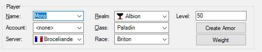

Player data

The most important player data are displayed here.
Name:
The name of the player. All currently loaded players are displayed in the
list box. At the start of the program, all players who are in the "Chars"
directory are automatically loaded.
Account:
To which account does the player belong? Only needed if you want to search
these accounts' treasure chests and inventories of other players when
searching for items.
Server:
The server on which the player is playing. Only needed if you want to
search for items on the same server.
Realm:
That should be clear. Since many other details relate to the chosen realm,
the right realm must be chosen here.
Class:
Here the player's class must be specified.
Race:
The race of the player can be specified here. This has an effect only on
the displayed resistances.
Level:
The player's experience level. This information is important as the
possible bonuses of items are targeted accordingly.
Create armor
Here, the complete armor for a player can be created in a slide. Stands
already occupied by other objects are not touched.
Weights
Opens a dialog box where you can set the weights,
i.e. which can determine the importance of different attributes. These
values have an effect on the displayed usefulness of an object.